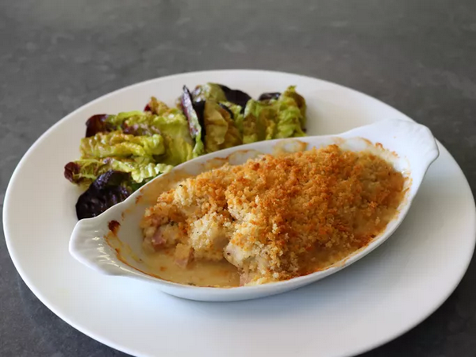

Chicken Cordon Bleu Casserole

Description:
A simpler and cleaner method of making Chicken Cordon Bleu. This casserole method simplifies the process and makes individual portions much easier!
Ingredients:
Crumb Topping:
1/3 cup panko breadcrumbs
2 tablespoons unsalted butter
1 tablespoon finely grated parmesean cheese
1 pinch freshly ground black pepper
Chicken:
1 large boneless skinless chicken breast
1/8 teaspoon freshly ground black pepper
2 tablespoons of heavy cream
1 rounded teaspoon of dijon mustard
1 oz grated gruyere cheese
Steps:
- Preheat oven to 425 degrees F - 220 degrees C
- Place panko in bowl, add butter, parmesean and black pepper, stir until mixure resembles wet sand
- Cut chicken into 1/2 inch cubes and transfer to a bowl. Season with sat, black pepper, cayenne, thyme, and salt. Add cream, dijon, ham, and 2/3 of the gruyere
- Stir chicken mixture to combine, transfer into small baking dish and top with the remainder of the gruyere
- Spoon breadcrumb mixture over the top, poke crumbs down lightly into the chicken with the tip of the spoon before evening out the top
- Bake in the preheated oven until chicken is cooked through, the casserole is bubbling around the edges, and the top is browned, about 25 minutes. Let rest for 5 minutes
Home